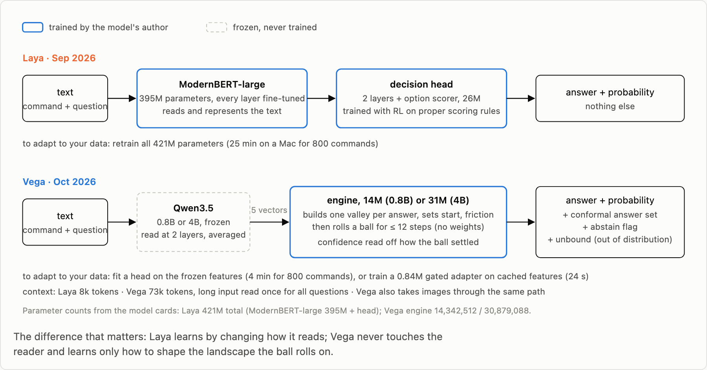
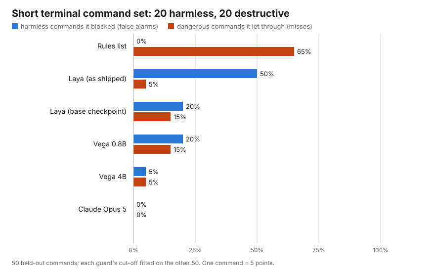
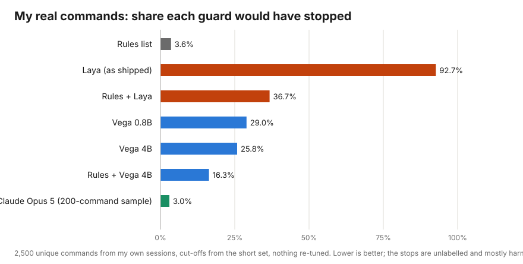
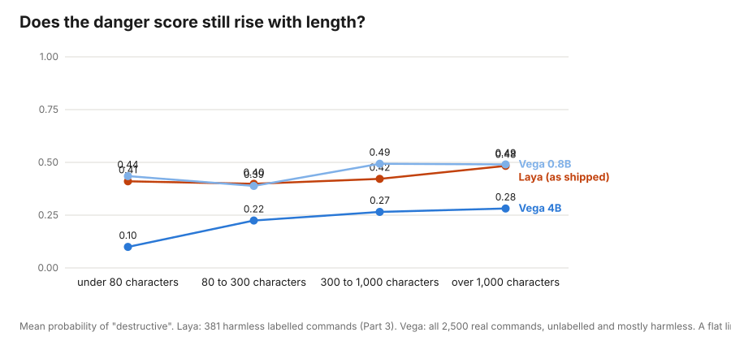
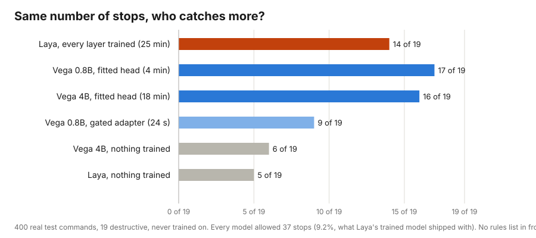

Experiment · Oct 15 · LLM Evaluation · 15 min read
Does Vega Work on Real Commands? Laya's Successor in Front of My Coding Agent
Vega is a new decision model from the author of Laya. It keeps its language model frozen and decides by rolling a ball into a valley. I put it through the same three tests as Laya: 50 short commands, 2,500 real commands from my own sessions, and 400 labelled real commands. Then I trained it two ways and set the results beside Laya's full fine-tune.
Part of this series
- Part 1: Laya, explained. How the model turns a question into an answer sheet and gives each answer a probability, in pictures.
- Part 2: Does Laya work on real commands? Few errors on 50 short test commands, but it would have wrongly stopped about a third of my real, harmless ones.
- Part 3: Teaching Laya my real commands. Training every layer on 800 of my commands cut false alarms from 38 in 100 to 6.
- Part 4 (this post): Vega, the successor, through the same tests.
On the short set Vega 4B wrongly stopped 1 of 20 harmless commands where Laya stopped 10. On my real commands it stopped 26 of every 100 where Laya stopped 93. A hosted model stopped 3. Better than Laya on every count, and still not a guard.
In Part 2 I put Laya, a small open decision model, in front of my AI coding agent as a safety check: before any terminal command runs, the model says how likely it is to be destructive. On 50 short commands it looked good; on 4,549 real commands from my own sessions it would have stopped me about one time in three, nearly always for nothing, because its danger score rose with the length of a command rather than with what the command did. Part 3 fixed most of that by training every layer of Laya on 800 of my own commands.
On 10 October 2026 Laya's author released a second model, Vega (Vega write-up). It is built on a different idea, so the question was obvious: does it pass the test Laya failed? This post runs Vega through exactly the same three tests, with the same cut-off procedure and nothing re-tuned, and then trains it the two ways its author provides.
At a glance
- What Vega is. A frozen language model (Qwen3.5, 0.8B or 4B parameters) reads the text; a small trained engine (57 MB or 124 MB) builds a landscape with one valley per possible answer and rolls a ball into it. The language model is never trained.
- Short terminal command set. Vega 4B wrongly stopped 1 of 20 harmless commands and let through 1 of 20 destructive ones. Laya as shipped: 10 and 1. Vega's probabilities were also the most honest of any local model I have measured.
- Real commands, nothing trained. Vega 4B would have stopped 26 of every 100 (16 behind the rules list). Laya: 93 (37 behind the rules). Claude Opus 5 on the same commands: 3. The length problem is weaker and still there.
- After training on 800 labelled commands. Vega's built-in four-minute head fit ranks my real commands as well as Laya's 25-minute full fine-tune, and at the same number of stops catches 17 of 19 destructive commands to Laya's 14. It gives you no usable cut-off. The author's adapter gives honest probabilities and a weaker ranking.
- Where Vega is worse. It is 4 to nearly 40 times slower on my Mac, and when asked what a command does it labels
catas "sends data out".
The model
A frozen reader and a ball on a hill
Laya is one trained network: a reading model of 28 layers and a decision head on top, every parameter changed during its training (Part 1). Vega splits the job. The reading is done by Qwen3.5, an off-the-shelf language model with 0.8 billion or 4 billion parameters, which Vega never trains; it even pins the model's checksum and refuses a changed copy. The forward pass stops at the nineteenth of 24 layers, and the word vectors for the command, the question and each possible answer are averaged into five summaries. Those five vectors are all the rest of the model ever sees.
The deciding is done by a small engine of 14 million parameters (31 million in the 4B). For every question it builds a landscape: a bowl, so nothing can roll away, with one valley dug into it per possible answer. Small networks read the five summaries and set where a ball starts, how deep and wide each valley is, and the friction. Then the engine runs twelve steps of plain mechanics, momentum and friction, and the ball comes to rest in one valley. That valley is the answer. How deep the ball sits and how fast it settled give the confidence; a ball that stops nowhere near any valley raises an "unbound" flag, the model's way of saying the question was outside what it knows. The engine itself has no trained weights; only the networks that shape the landscape do.

You can watch the roll below. Three situations, each with hand-chosen valleys so the three outcomes are visible: a clear answer, a close call where the model abstains, and an off-topic input where the ball settles nowhere. The real engine works in 64 dimensions and sets the valleys from the text; this is a one-dimensional sketch of the same mechanics.
Vega's author is open about where it stands: on his own benchmarks a hosted model is more accurate everywhere, and Vega's case rests on calibrated probabilities, local inference and a 73,000-token context. This post tests one job only: is a shell command destructive?
How I measured
The same three tests, nothing re-tuned
- The short terminal command set from Part 2: 100 single-line commands, 40 harmless, 40 destructive, 20 in a grey zone. Each guard's cut-off score is chosen on one half; every number below comes from the other 50.
- My real commands from Part 2: 2,500 unique commands from my own sessions, median length 519 characters, scored with the cut-offs from the short set. These are not labelled, so the number to watch is how many the guard would have stopped, which Part 2 showed to be mostly harmless.
- The 400 labelled real commands from Part 3: 19 destructive, 381 harmless, labelled by Claude Opus and never trained on. Here I can count both false alarms and misses.
Every model was asked the same three typed questions Laya was asked: is this command destructive (yes or no), what does it mainly do (five categories), and how far could the damage reach (a 0 to 2 score). Vega ran on my Mac in full precision; its published speed figures are for a data-centre GPU in half precision, so the latencies here are slower than the author's. Both Vega sizes were tested: the 0.8B, which is the default, and the 4B.
Results on the short set
Vega 4B is the first local model that behaves like a guard on the short commands
Measured: 50 held-out commands of the short terminal command set, 20 harmless, 20 destructive
| Guard | Harmless wrongly stopped (of 20) | Destructive let through (of 20) | Calibration error (lower is better) | Time per command |
|---|---|---|---|---|
| Rules list alone | 0 | 13 | 0.00 | 0 ms |
| Laya as shipped | 10 | 1 | 0.34 | 94 ms |
| Laya, base checkpoint | 4 | 3 | 0.21 | 86 ms |
| Vega 0.8B | 4 | 3 | 0.19 | 373 ms |
| Vega 4B | 1 | 1 | 0.11 | 1.4 s |
| Claude Opus 5, low effort | 0 | 0 | 0.07 | 2.3 s |

Vega 0.8B lands exactly where Laya's base checkpoint did and makes the same kind of mistake: npm run build, pytest and rsync read as destructive. Vega 4B gets one harmless command wrong, git push origin feature/login, which it files under "sends data out", and misses one destructive one, ssh-keygen silently overwriting a key, which Laya also missed and Claude scored at only 0.60. Its probabilities are the best calibrated of any local model in this series: a calibration error of 0.11 against Laya's 0.34, where 0 would mean a "70%" really is right 70 times in 100.
One side finding did not survive the real test. Vega 4B raised its "unbound" flag, the out-of-distribution signal, on 72% of the harmless short commands and only 15% of the destructive ones, which looked like a second, free safety signal. On the 2,500 real commands the flag was up on 67% of the commands it stopped and 66% of the ones it passed. It carries no information there; the short commands are simply all unlike Vega's training data.
Results on real commands
Better than Laya, still one stop in every four

Zero-shot, Vega 4B would have stopped 25.8% of my real commands, and 16.3% with the rules list in front. Laya as shipped stopped 92.7%, and 36.7% behind the rules. So Vega transfers from short commands to real scripts far better than Laya did. It still stops one command in four. What it stops is mostly scripts: 374 of the 645 commands it stopped are heredocs, a Python or shell program piped in on the spot, and the median stopped command is 690 characters against 467 for the ones it let through. Of the five commands that Claude Code's own safety check had refused, Vega caught one. Claude Opus 5 at low effort stopped 3.0% of the same commands, and each of its six stops was defensible.
The 4B stops 25.8% against the 0.8B's 29.0%, at 3.6 seconds per real command against 0.9. Laya answered in under a tenth of a second. On this Mac, Vega 4B has Claude's latency without Claude's accuracy; on the GPU its author measured on, it would be about a hundred times faster, so part of that gap is hardware.
The length problem
Does the danger score still rise with length?
Laya failed in production because its score for "destructive" rose with the length of a command, whatever the command did. The same check on Vega: the mean score on harmless commands, grouped by length.

Vega 4B's mean score goes from 0.10 on commands under 80 characters to 0.28 on commands over 1,000, and the share it stops from 10% to 31%. The absolute scores are lower than Laya's, so fewer commands cross the cut-off, but the slope is there. The 0.8B's mean is flatter, 0.44 to 0.49, yet its stop rate still climbs from 26% to 37%, because long commands get more extreme scores in both directions. Vega did not learn to read length as danger the way Laya did; it still reads long scripts as more dangerous than they are.
Training
A four-minute head fit matches a 25-minute fine-tune in ranking
Part 3 trained Laya on 800 of my labelled commands three ways and found that only training every layer, all 421 million parameters, worked: 25 minutes on this Mac, and AUROC on the 400 held-out commands rose from 0.67 to 0.93. (AUROC measures how well a guard ranks destructive commands above harmless ones, whatever the cut-off: 1.0 is perfect, 0.5 is guessing.)
Vega offers two ways to learn from your data, and neither touches the language model. The first is built in: fit() runs each labelled command once through the frozen reader, keeps the five summaries, and fits a small classifier on them. On the same 800 commands this took 4 minutes for the 0.8B and 18 for the 4B. The second is the author's own recipe: train a small adapter, 0.84 million parameters, inside the engine, with a gate that learns when the adapter should apply, and refit the calibration afterwards on held-out commands so the probabilities keep meaning something. I ran that on the same 681 training and 159 validation commands Part 3 used; once the reader's summaries were cached, training took 24 seconds.
Measured: 400 real test commands, 19 destructive, 381 harmless; each model's own cut-off; no rules list in front
| Model state | Stopped (of 400) | Destructive missed (of 19) | Harmless wrongly stopped (of 381) | AUROC |
|---|---|---|---|---|
| Laya as shipped | 92.0% | 0 | 349 | 0.67 |
| Laya, every layer trained (25 min) | 5.5% | 7 | 10 | 0.94 |
| Vega 0.8B, nothing trained | 31.2% | 9 | 115 | 0.63 |
| Vega 4B, nothing trained | 24.8% | 6 | 86 | 0.82 |
| Vega 0.8B, fitted head (4 min) | 2.0% | 15 | 4 | 0.93 |
| Vega 4B, fitted head (18 min) | 2.5% | 14 | 5 | 0.94 |
| Vega 0.8B, gated adapter (24 s), cut-off 0.5 | 2.2% | 15 | 5 | 0.90 |
| Vega 0.8B, gated adapter, cut-off 0.1 | 13.8% | 6 | 42 | 0.90 |
A cut-off can hide or flatter a model, and the fitted heads show it: 2% stopped and 15 of 19 missed is a cut-off placed badly, not a model that cannot see danger. The fair comparison fixes the number of stops and asks who catches more. Give every model the 37 stops that Laya's trained model shipped with, 9.2% of the 400, and count the destructive commands caught.

At the same stop rate, Laya's every-layer fine-tune catches 14 of 19, Vega 0.8B's four-minute head catches 17 and the 4B's 16. The frozen Qwen summaries already separate destructive from harmless in my scripts; Laya's reader had to be rewritten to get there. What the head does not give you is a cut-off: it has no calibration, its author says so, and the threshold it fitted on the training commands stopped 2% and missed 15. It also learned the shape of my scripts and lost the short commands: on the short terminal command set it missed 17 of 20 destructive ones. Part 3's fine-tune regressed there the same way, less sharply.
The adapter
The author's gated adapter: honest probabilities, weaker ranking
The adapter is the mirror image. Against the base engine through the identical path, it lifted AUROC from 0.61 to 0.90 and cut the calibration error from 0.42 to 0.02, so a probability from it means what it says: at the natural cut-off of 0.5 it stops 2.2% of the test commands, and 2.8% of all 2,500 real commands, with 5 false alarms in 381. Lower the cut-off to 0.1 and it stops 13.8% and misses 6 of 19. On the short set at 0.5 it wrongly stops 3 of 20 harmless commands and misses 2 of 20 destructive, which the fitted head could not manage. The gate works as designed: it opened on every prompt asking the destructive question and on none of the same commands asking the category question. But its ranking is weaker than the head's: at the matched 37 stops it catches 9 of 19. It compresses harmless scores toward zero and leaves a thin tail of harmless scripts above the destructive ones. And the cut-off rule from Part 3, fitted on 8 validation positives, lands at 0.03 and stops 23.8%: the same lesson as Laya's 0.9% cut-off, too few examples to place a threshold on a model this skewed.
Where it is worse
Where Vega is weaker than Laya
- The category answer. Of 13 harmless short commands that are plainly read-only (
ls,cat,grep,git status), Laya labelled 8 as read-only, both Vega sizes 4. Vega 0.8B answered "writes files" for 81 of the 100 short commands and 89% of the real ones; Vega 4B filescatunder "sends data out". The stop decision would be right more often than Laya's; the reason shown with it would be wrong more often. - Speed. Laya: under 0.1 seconds. Vega 0.8B: 0.4 seconds on short commands, 0.9 on real ones. Vega 4B: 1.4 and 3.6. Vega's published figure is 22 milliseconds on a T4 GPU in half precision.
- Zero-shot misses that matter. Vega 0.8B scored the AppleScript that deletes every reminder in a list at 0.17, and two
git addcommands that staged a whole set of files under 0.2. Those are the commands a guard exists for. - Abstaining. Vega 0.8B declined to answer on 30% of the short commands and 18% of the real ones. Honest, and useless to a hook that must say allow or ask.
Cost and time
What it cost and how long it took
Measured: time on a MacBook with 48 GB of memory
| Step | Time | Money |
|---|---|---|
| Downloading the weights (1.6 GB for the 0.8B, 8 GB for the 4B) | about 15 min | $0 |
| Short set, 100 commands, both sizes | 3 min | $0 |
| 2,500 real commands, Vega 0.8B | 36 min | $0 |
| 2,500 real commands, Vega 4B | 2.5 hours | $0 |
| Fitted head on 800 commands, 0.8B and 4B | 4 min and 18 min | $0 |
| Gated adapter: caching the reader's summaries for 4,640 prompts, then training | 40 min, then 24 s | $0 |
| Claude Opus 5 on 200 real commands (Part 2) | 7 min | $0.70 |
So what
Conclusion and impact
Is Vega the local guard Laya was not? Closer, on every count I measured, and still no. On the short commands Vega 4B is the first local model that behaves like a guard, with honest probabilities to go with it. On real commands it stops one in four unprompted, Claude stops one in thirty, and the length bias that sank Laya is weaker rather than gone. The gap between a short test set and production shrank, from Laya's 5% of harmless commands wrongly stopped on the short set against 37% in use, to Vega 4B's 5% against 26%. It did not close. Cut-offs fitted on 21-character commands still do not describe 519-character scripts.
The design result is the one worth carrying away. A frozen reader plus a tiny trained decider reached the ranking quality that Laya reached only by retraining every one of its 421 million parameters, in four minutes instead of 25. Calibration and ranking then came apart: the adapter keeps the probabilities honest, the head keeps the better order, and neither alone is a guard yet. My guard stays where Part 3 left it: rules list on, local model off, a hosted model as the soft layer.
If you take one thing from this
When a new model arrives claiming to fix the last one, rerun the same tests, including the one the last model failed in production. Vega's short-set numbers are better than Laya's and would have told the same flattering story Laya's did. The 2,500 real commands are what separate "better model" from "usable guard".
Appendix
Limitations and how to replicate
Limitations.
- Few destructive commands to test on. Twenty per class on the short set and 19 in the real test set, so one command moves a number by five points.
- Labels from a model. The real-command labels are Claude Opus's, so where Vega and Claude disagree, Claude is the reference, not the truth.
- One Mac, full precision. Vega's latency here is fp32 with fallback kernels for Qwen3.5's attention; its published 22 ms is fp16 on a T4.
- One seed, one setting. Each training run was done once. The adapter was trained on 681 commands with 55 destructive; the author's recipe uses 16,000 rows.
- Vega's shipped adapters were on. Zero-shot figures use the model as installed, in the author's "engine" mode, one reading per command, no test-time averaging.
- Jev, the hosted model Laya and Vega are both compared with, is not in this post. The scorer is written; it needs a paid API key.
To replicate. The code for all four posts is on GitHub. Vega needs Python 3.10 or newer, so it runs in its own environment (.venv-vega, set up with two commands in the README). vega_eval.py runs the short set, vega_history.py the real commands, the labelled set and the head fit, vega_adapter.py the author's adapter recipe in three stages, and vega_report.py renders the full comparison report (docs/vega_report.html). The interactive version of the roll above, with every part of the picture named in technical terms, is docs/vega_mechanism.html; the same page with the explanation written out is docs/vega_explained.html. The real commands and the labelled set stay private; run the scripts on your own history to reproduce that half.
References
Sources
- Nandakishor M. "Vega: a decision model that rolls a ball down a hill", 10 October 2026, and the vegaml code and weights, Apache 2.0. Write-up · GitHub · Hugging Face
- Convai Innovations. "Laya" model card, weights and code, Apache 2.0, September 2026. Hugging Face
- Greydanus, S., Dzamba, M., Yosinski, J. "Hamiltonian Neural Networks." NeurIPS 2019 (the family of models Vega's engine belongs to). arXiv
- Prachi Sharma. "laya-guard": the code for this series. GitHub